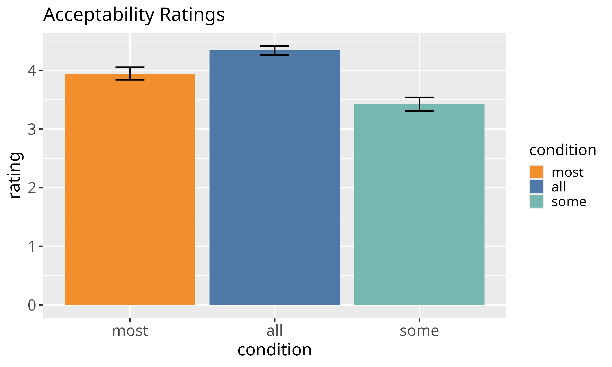
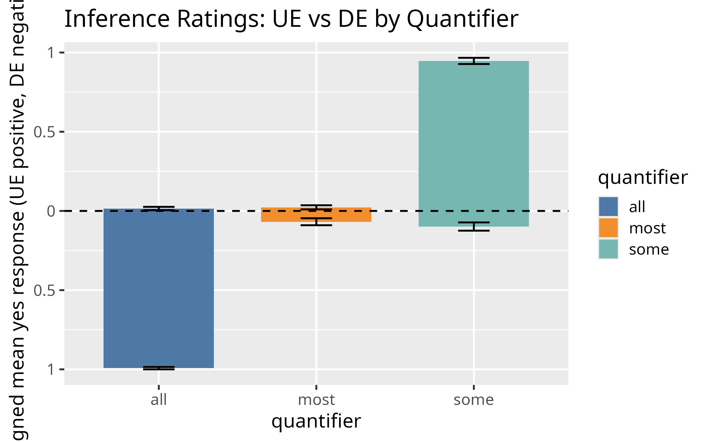

Scope Over Monotonicity: NPI Licensing with Czech ‘majority’
Mojmír Dočekal and Rhiana Horovská
Masaryk University
2026-05-01
Background
The Classic Problem with NPIs
- Negative Polarity Items (NPIs) traditionally analyzed as markers of downward entailment (DI)
- NPIs like “even the least” (sebemenší)
- Classical view: NPIs require downward-entailing (DE) environments
Classic Example (English):
- ✓ “Nobody found any cat”
- ✗ “Someone found any cat”
Czech Example:
- Nikdo nenašel sebemenší … (nobody found even the least)
- But what about “most”?
The Challenge: Mixed Evidence
- Szabolcsi et al. (2008): No correlation between DI and NPI licensing
- Chemla et al. (2011), Denić et al. (2021): Suggested relationship based on judgments
- Barker (2018): Alternative proposal
- NPIs signal narrow scope, not monotonicity
Alternative Hypothesis
Barker’s Scope-Marking View:
NPIs signal narrow scope with respect to their licensor, not necessarily monotonicity
Implication: NPIs might be licensed even in non-monotonic environments!
The Key Test Case: “Most” (Vetšina)
Proportional Quantifier:
\[[[\text{vetšina} ]](A)(B) = 1 \text{ iff } |A \cap B| > |A \setminus B|\]
- NOT downward-entailing
- NOT upward-entailing
- Genuinely non-monotonic
Example:
- Most circles are in the box
- ⇸ Most shapes are in the box (fails!)
- ⇸ Most green circles in the box (fails!)
Research Question
Can NPIs be licensed in genuinely non-monotonic environments?
If YES: This supports Barker’s scope view, not Ladusaw’s monotonicity view!
Experiment Design
Overview: Two-Part Study
- Acceptability Task: Do speakers accept NPIs with “all”, “most”, “some”?
- Inference Task: What inference patterns do speakers show for these quantifiers?
Participants
- N = 24 (acceptability-first condition)
- N = 29 (inference-first condition)
- Tested for order effects (found none)
Experiment Part 1: Acceptability Task
Design
- Factorial: 1×3 design (9 items)
- Quantifier factor: DE (all), NM (most), UE (some)
- Scale: 1-5 Likert
Example Item
Všichni / Většina / Některí občané se sebemenší vírou v Boha
chtěli nalezenému dítěti vystrojit křest.
Translation: > “All / Most / Some of the citizens with even the least faith in God > wanted to arrange a christening for the found child.”
Prediction
Expected acceptability order: all > most > some
Experiment Part 2: Inference Task
Design
- 2×3 factorial: 18 items total
- Binary factor: UE vs. DE entailment direction
- UE: circles → shapes
- DE: circles → green circles
- Ternary factor: Quantifier (all/most/some)
Visual Setup
Participants saw images with shapes in different colors:
Inference Task (Continued)
Procedure
- See image (e.g., 6 red circles, 6 green circles)
- Told: shapes will go in two boxes, one has opaque walls, one has window
- Asked: Does Sentence A entail Sentence B?
Example
Sentence A: All of the circles are in the box on the right.
Sentence B: All of the shapes are in the box on the right.
Question: Does A entail B? (Yes/No)
Predictions
- all: “Yes” for DE (circles→shapes? No; circles→green circles? Yes)
- some: “Yes” for UE (upward inferences)
- most: “No” for both (should show no monotonic pattern)
Key Inference Task Images
14-some.png
Results: Acceptability Ratings

acceptability_ratings_errorbar.png
Statistical Analysis
- Bayesian linear mixed models (random intercepts for participants)
- all vs. most: β = 0.43 [0.18, 0.67], BF₁₀ = 5.14 ✓
- some vs. most: β = -0.49 [-0.73, -0.24], BF₁₀ = 24.6 ✓
Means: all (4.34) > most (3.95) > some (3.42)
Results: Inference Patterns

inference_ue_de_signed.png
Inference Results: Statistical Details
Bayesian Logistic Mixed Models
Effect of Quantifier:
- all robustly endorses DE inferences: β = -8.51, BF₁₀ = 9.20×10⁵ ✓
- some robustly endorses UE inferences: β = 7.09, BF₁₀ = 3.50×10⁸ ✓
- most shows NO clear pattern: β = -1.30, BF₀₁ = 1.06 ✓
- DE: 6.8%, UE: 2.3% (both near floor!)
The Critical Dissociation
Acceptability
- all: 4.34 ✓✓
- most: 3.95 ✓
- some: 3.42
Monotonicity
- all: 100% DE ✓✓
- most: Neither! ✓
- some: 100% UE
Key Finding
“Most” licenses NPIs at intermediate acceptability levels DESPITE being genuinely non-monotonic
Discussion
Challenge to Ladusaw (1979)
Ladusaw’s Hypothesis:
Downward entailment is a synchronic licensing condition for NPIs
Our Evidence:
- “Most” is empirically non-monotonic (BF₀₁ = 1.06)
- Yet it still licenses NPIs at intermediate levels
- This is STRONGER evidence than double licensing (which uses monotonic operators)
Supporting Barker’s Alternative
Barker (2018): Scope-Marking View
NPIs signal narrow scope relative to their licensor:
\[\exists d \, [\text{vetšina}_x(F(x,d) \rightarrow P(x))]\]
Cannot infer:
\[\text{vetšina}_x((\exists d \, F(x,d)) \rightarrow P(x))\]
Why this works with “most”:
- There may be a threshold of faith degree that guarantees acceptability
- First formula can be true while second is false
- NPI takes narrow scope within restrictor (sebemenší vírou = “least faith”)
Comparing Quantifiers
The monotonicity landscape:
- all (DE): Maximum downward reasoning → highest acceptability
- most (NM): No monotonic pattern → intermediate acceptability
- some (UE): Maximum upward reasoning → lowest acceptability
This gradient is incompatible with synchronic DE requirement but aligns perfectly with scope theory!
Diachronic vs. Synchronic
Historical vs. Contemporary
- Diachronically (historically): NPIs may have grammaticalized in DE environments
- Synchronically (in modern Czech): Downward inference is NOT necessary
- Only narrow scope is required
Main Contributions
- Replicates Szabolcsi et al. (2008) null finding
- Extends to theoretically critical case: empirically non-monotonic quantifier
- Provides stronger evidence against DI-NPI link than double licensing alone
- Supports Barker’s (2018) scope-marking view over classical monotonicity theory
Broader Implications
- NPI licensing is domain-sensitive (Homer 2021)
- What matters is scope relations, not logical monotonicity
- Classical analyses based on semantic features may miss pragmatic mechanisms
- Experimental evidence crucial for testing competing theories
Takeaway
Scope triumphs over monotonicity: NPIs mark narrow scope, not downward entailment
References
- Alexandropoulou, S., L. Bylinina, and R. Nouwen (2020). Is there any licensing in non-DE contexts? Proceedings of Sinn und Bedeutung 24(1), 35–47.
- Barker, C. (2018). Negative polarity as scope marking. Linguistics and Philosophy, 41(5), 483–510.
- Barwise, J. and R. Cooper (1981). Generalized quantifiers and natural language. Linguistics and Philosophy, 4(2), 159–219.
- Chemla, E., V. Homer, and D. Rothschild (2011). Modularity and intuitions in formal semantics. Linguistics and Philosophy, 34, 537–570.
- Denić, M., V. Homer, D. Rothschild, and E. Chemla (2021). The influence of polarity items on inferential judgments. Cognition, 215, 104791.
- Homer, V. (2021). Domains of polarity items. Journal of Semantics, 38(1), 1–48.
- Ladusaw, W. A. (1979). Polarity Sensitivity as Inherent Scope Relations. Ph.D. thesis, University of Texas.
- Szabolcsi, A., L. Bott, and B. McElree (2008). The effect of negative polarity items on inference verification. Journal of Semantics, 25(4), 411–450.